|
|
|
coastal
plants text
index | photo
index
|
| coastal plants |
| Serengan
Flemingia strobilifera Family Fabaceae updated Aug 09 Where seen? This strange bush with tassels of dry flower bracts are planted at Chek Jawa. According to Burkill, it was found from India to the "furthest part of Malaysia". It was common in the Peninsula in more inhabitated places. According to Hsuan Keng it was uncommon and is a seashore plant that was recorded for Changi. Previously known as Monghania strobilifera. Features: A shrub (1-1.5m tall). Leaves with prominent veins, arranged alternately. Young leaves are small and appear to overlap one another. The papery flower bracts appear in a long drooping row. Green when young, turning brown. Fruits are pods that explode when ripe. The seeds are tiny, brown-black with red mottling. Human uses: According to Burkill, the leaves are administered after childbirth and used for bathing the body. It is also used to treat rheumatism. The leaves were used to stuff pillows in Perak. The wood is burned for use in blackening the teeth. Some species of Flemingia (but not this one) produce a brilliant orange dye but this can only be used on silk and does not work on cotton. This plant is considered an invasive in some places where it has been introduced. |
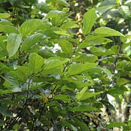 Planted specimen Chek Jawa, May 09 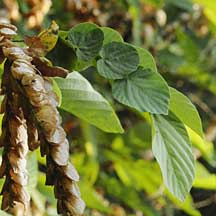 |
|
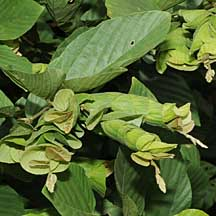 Chek Jawa, Nov 09 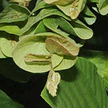 |
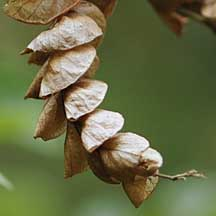 Chek Jawa, May 09 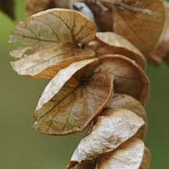 |
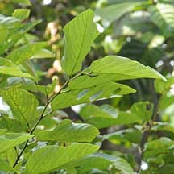 Chek Jawa, May 09 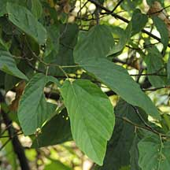 |
|
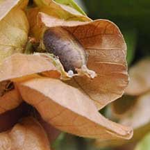 Chek Jawa, Mar 10 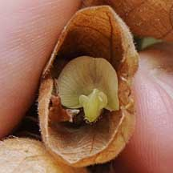 |
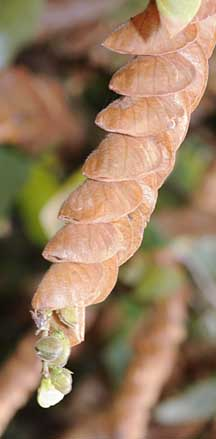 Chek Jawa, Mar 10 |
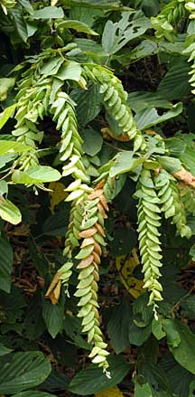 Chek Jawa, Nov 09 |
|
Links
References
|
|
|